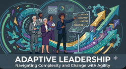
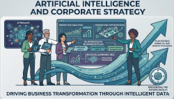

Latest Global Business News
Welcome to your source for the latest global business news, delivering essential insights, emerging trends, market developments, and strategic perspectives shaping today’s rapidly changing business world.
Read article →
A selection of articles addressing strategy, innovation, change management, leadership and organizational transformation in complex environments.
Welcome to your source for the latest global business news, delivering essential insights, emerging trends, market developments, and strategic perspectives shaping today’s rapidly changing business world.
Read article →
New organizational scenarios require leaders capable of interpreting permanent change, managing uncertainty and developing collective learning processes.
Read article →
Artificial Intelligence represents a strategic opportunity when integrated with human capabilities, organizational processes and a coherent transformation vision.
Read article →